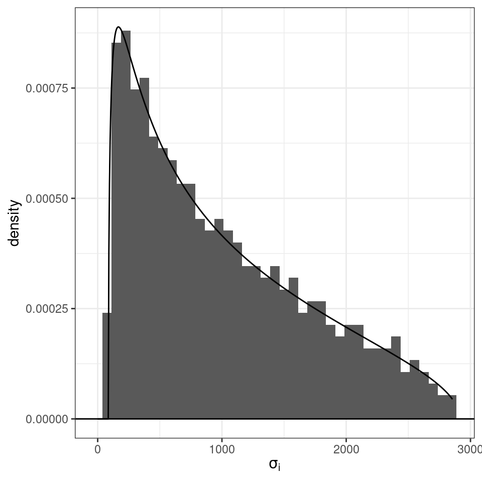

Lecture 9 Quasi-polynomial systems
Lesson plan:
- We discuss a fairly general class of dynamical systems, called “Quasi-Polynomial” (QP-)systems.
- We show how any QP-system can be written as a larger-dimensional Generalized Lotka-Volterra model.
- This means that the machinery we built for analyzing GLV models can be used to tackle a variety of models that at face value do not seem to fall in this class.
- This also shows that the GLV model is in a way a “universal” model.
- For a simple application, we examine models of metapopulation dynamics with ecosystem engineering.
9.1 From QP to GLV
We call a Quasi-Polynomial system a system of \(n\) ODEs that can be written as:
\[ \frac{d x_i(t)}{d t} = x_i(t) \left(s_i + \sum_{j = i}^m A_{ij} \prod_{k=1}^n x_k(t)^{B_{jk}}\right) \] where \(s\) is a vector of “growth rates” (not necessarily positive), \(A\) is a matrix of interactions, and \(B\) a matrix of exponents. Note that if we take \(B = I_n\) (the identity matrix), we recover the GLV model. If \(B\) contains only integers, then we recover a polynomial system. Extending this model to real (but not necessarily integer) numbers \(B_{jk}\), we have a “quasi-polynomial” system (Hernández-Bermejo, Fairén, and Brenig (1998)).
In general, we assume that \(A\) is of size \(n \times m\), \(B\) is \(m \times n\), and that the \(x_i(t)\) are real and positive (if that’s not the case, one needs to perform a change of variables that ensures positivity). The system has \(n\) variables (the \(x_i(t)\)), and we can identify \(m\) “quasi-monomials”:
\[ \prod_{k=1}^n x_k^{B_{jk}} \]
For example, take the system:
\[ \begin{cases} \frac{d x_1}{dt} = x_1 -x_1^{3/2} + \frac{1}{4}x_1 x_2^2\\ \frac{d x_2}{dt} = x_2 - \frac{1}{2}x_2^2\\ \end{cases} \]
with dynamics:
qp1 <- function(t, x, pars){
x1 <- x[1]
x2 <- x[2]
dx1dt <- x1 * (1 - sqrt(x1) + (1 / 4) * x2^2)
dx2dt <- x2 * (1 - (1 / 2) * x2)
return(list(c(dx1dt, dx2dt)))
}
set.seed(0)
x0 <- runif(2)
outqp1 <- ode(y = x0, times = seq(0, 45, by = 0.25), func = qp1, parms = NULL, method = "ode45")
ts <- plot_ODE_output(outqp1)
Showing that in this case dynamics reach the equilibrium \((x_1^\star, x_2^\star) = (4,2)\). This can be rewritten as:
\[ \begin{cases} \frac{d x_1}{dt} = x_1\left(1 -x_1^{1/2} + \frac{1}{4} x_2^2\right)\\ \frac{d x_2}{dt} = x_2 \left(1 - \frac{1}{2}x_2 \right) \end{cases} \]
which is in QP-form, with:
\[s = (1, 1)^T\]
\[A = \begin{pmatrix} -1 & 1/4 & 0\\ 0 & 0 & -1/2 \end{pmatrix}\]
\[B = \begin{pmatrix} 1/2 & 0 \\ 0 & 2 \\ 0 & 1 \end{pmatrix}\]
Now we perform a change of variables, writing an equation for each quasi-monomial:
\[ z = () \]
References
Hernández-Bermejo, Benito, Vı́ctor Fairén, and Léon Brenig. 1998. “Algebraic Recasting of Nonlinear Systems of Odes into Universal Formats.” Journal of Physics A: Mathematical and General 31 (10): 2415.